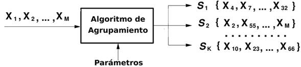

6. TECNICAS PARA EL DISEÑO DE ALGORITMOS
6.1 Branch and Bound
6.2 Divide and Conquer
6.3 Programación Dinamica
6.4 BackTracking
6.5 Algoritmos ávidos (Greedy)
7. INTRODUCCION ALGORITMOS PARALELOS
7.1 Computo Paralelo
7.2 Programación Paralela
7.3 Diseño de Algoritmos Paralelos
7.4 Ejemplos
8. CLASIFICACIÓN DE ALGORITMOS
8.1 Polinomiales
8.2 NP
8.3 NP-Complete
Arboles B: Ciencia de la computación es una disciplina relativamente joven. El problema fundamental de mantener un índice en almacenamiento secundarios es, por supuesto que el acceso al almacenamiento secundario.
Algoritmos Voraces: Algoritmos que implementan una búsqueda miope. Toman decisiones de acuerdo a la información que tienen en el momento, se utilizan en problemas de optimización.
Divide y Vencerás: Técnica que consiste en dividir un problema en subproblemas mas pequeños, para cambiar los resultados parciales para obtener el resultado final.
Branch and Bound: Aborda la resolución de modelos de programación entera a través de la resolución de una secuencia de modelos de programación lineal que constituya los nodos o subproblemas del problema entero. También se utilizan técnicas para eliminar todos aquellos nodos que no lleven a soluciones óptimas.
BackTracking: Utilizada para resolver problemas a través de una búsqueda exhaustiva.
Programación dinámica: Surge como respuesta para evitar la duplicación de cálculos de operaciones, consiste en identificar y guardar los resultados para uso posterior.
Computo
Paralelo:
Es la
ejecución de mas de un computo al mismo tiempo o paralelo, utilizando más de un
proceso.
A Nivel de Bits:
Basado en incrementar el numero de bits de una palabra Word length, Word size,
Word width.
A nivel de instrucción:
Capacidad de trasladar instrucciones depende de pipeline de procesador.
A nivel de instrucción:
Cada procesador realiza la misma tarea en diferentes partes de los datos.
A nivel de tareas:
Diferentes procesadores pueden estar ejecutando diferentes instrucciones en
diferentes partes de los datos.
Computación Paralela: Es una forma de computo en la que muchas instrucciones se ejecutan simultáneamente, operando sobre el principio de los problemas grandes, a menudo se pueden dividir en unos mas pequeños, que luego son resueltos simultáneamente (paralelo).
Diseño de Algoritmos en Paralelo: En ingeniería el software, el diseño de algoritmos es un método especifico para poder crear un modelo matemático ajustado a un problema específico para resolverlo.
Particionamiento: En computo los datos los cuales se opera se descomponen en tareas. Se ignoran aspectos como el numero de procesadores de la maquina al usuario y se concentra en explotar el paralelismo.
Comunicación: Se determina la comunicación requerida para coordinar las tareas, se definen como estructuras y algoritmos de comunicación.
Agrupamiento: Es un procedimiento de agrupación de una serie de vectores de acuerdo con un criterio. Esos criterios son distancia o similitud.

Algoritmo computacional: Es un algoritmo que puede ser ejecutados en una computadora.
Algoritmo no computacional: Es un algoritmo que no requiere de una computadora para ser ejecutado. Ejemplo: instalación de un equipo de sonido.
Algoritmo cualitativo: Un algoritmo es cualitativo cuando en sus pasos o instrucciones no están involucrados cálculos numéricos. Ejemplo: las instrucciones para desarrollar una actividad física, encontrar un tesoro.
Algoritmo cuantitativo: Un algoritmo es cuantitativo cuando en sus pasos o instrucciones involucran cálculos numéricos. Ejemplo: solución de una ecuación de segundo grado.
Clases de complejidad: La relación entre las clases de complejidad NP y P es una pregunta que la teoría de la complejidad aun no ha podido responder.
Función polinomial: Las funciones están entre las expresiones mas sencillas de algebra. Debido a esto con frecuencia se usan para aproximar otras funciones mas complicadas. Una función polinomial es una función cuya regla esta dada por un polinomio en una variable.
Clase
de complejidad P y PN:
En
esencia, la pregunta C es P=NP significa: si es posible verificar rápidamente
soluciones positivas a un problema del tipo si/no (donde “rápidamente” significa
en tiempo polinomio).
Los recursos comúnmente estudiados en complejidad computacional son:
-El tiempo: mediante una aproximación al numero de pasos de ejecución que un algoritmo emplea para resolver un problema.
-El espacio: mediante una aproximación a la cantidad de memoria utilizado para resolver el problema.